Projects build things the person opens: a web app, a digest page, a booking site. App links put those on Home, where the Needs you deck was. A project’s agent adds one when it publishes something worth opening (dream link), and the person can add one from a project’s published URL or any link. Long-pressing a link opens a menu: Open, Add to Home Screen, Rename, Change icon, Copy link, Remove. Every phone is 1206 × 2622 (iPhone 17 Pro).
A row of app icons under the header, like a second iOS dock. It’s the smallest change to Home and reads exactly like the icons the links can become. The trade-off: about five icons fit before the row scrolls, and who made a link only shows when you hold it.
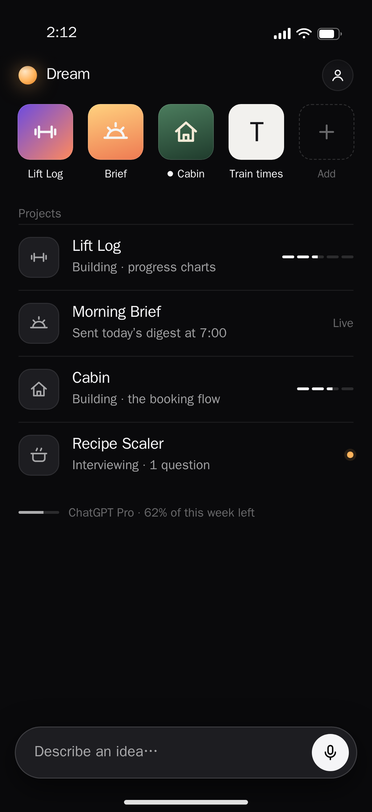
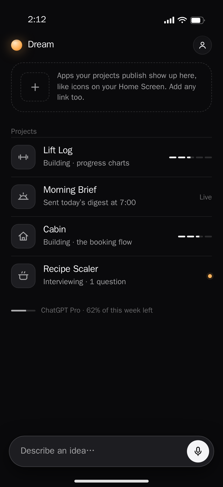
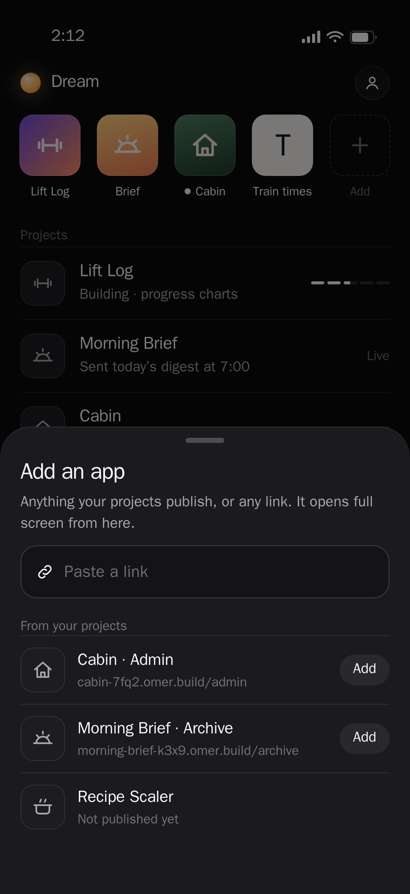
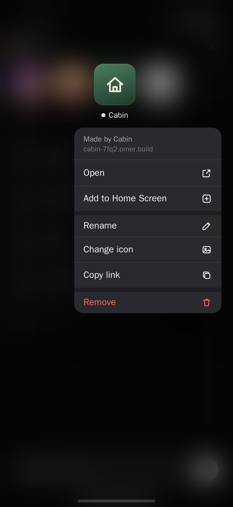
A 2-column grid of cards, each with a live preview of the page. You can see what’s inside before you open it, and Dream already loads every published URL after each turn, so it could keep the previews fresh. The trade-off: four cards take half the screen and push projects below the fold, and previews need a screenshot pipeline.
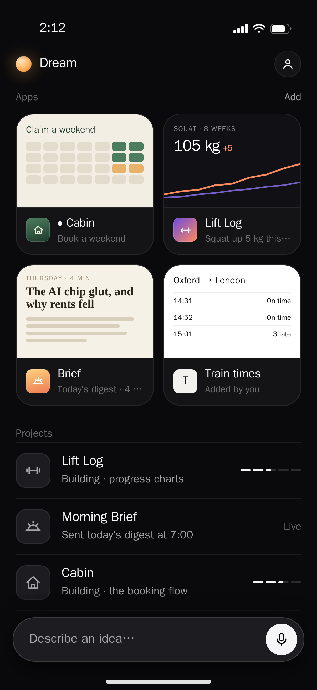
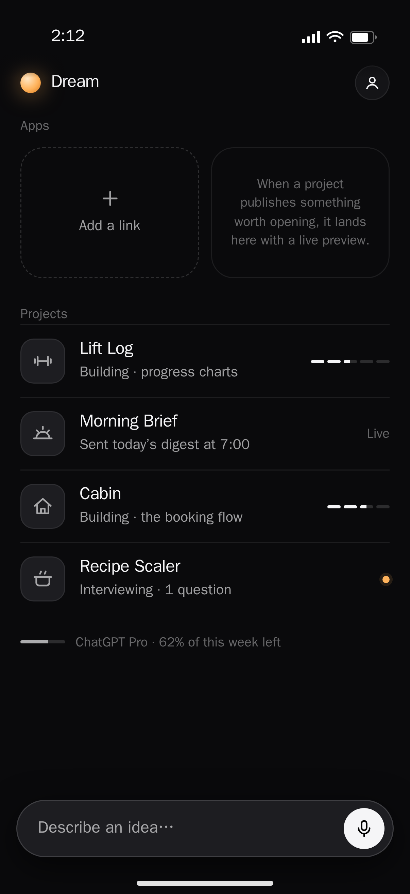
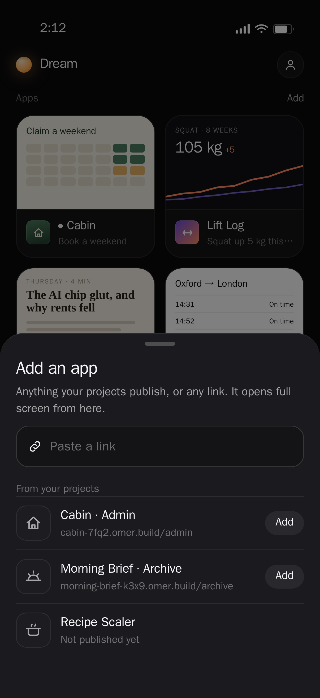
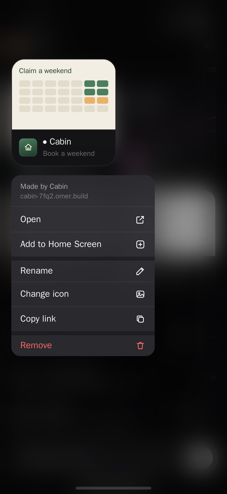
No new section: a project with something to open gets an Open chip on its row. It’s the calmest Home, and every link stays tied to the project it came from. The trade-off: links to other sites need a “Links” row, each project gets one chip at most, and the chip pushes out the progress bar.
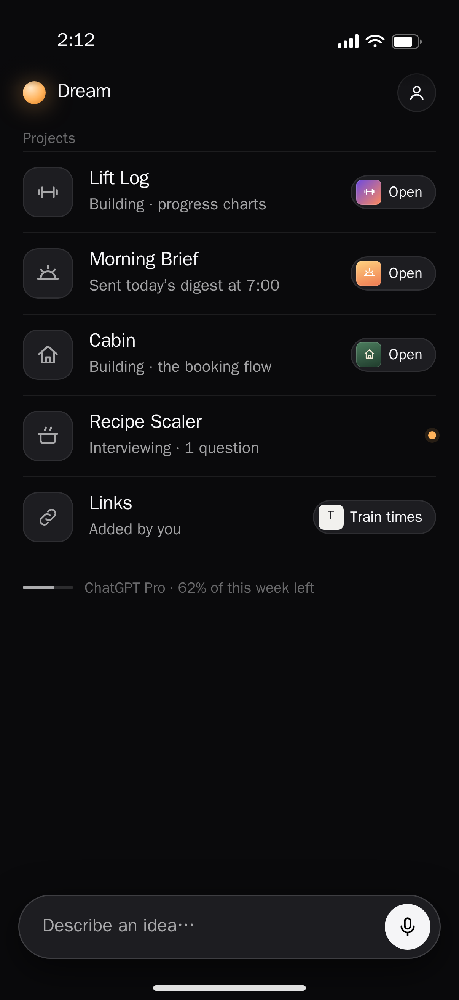
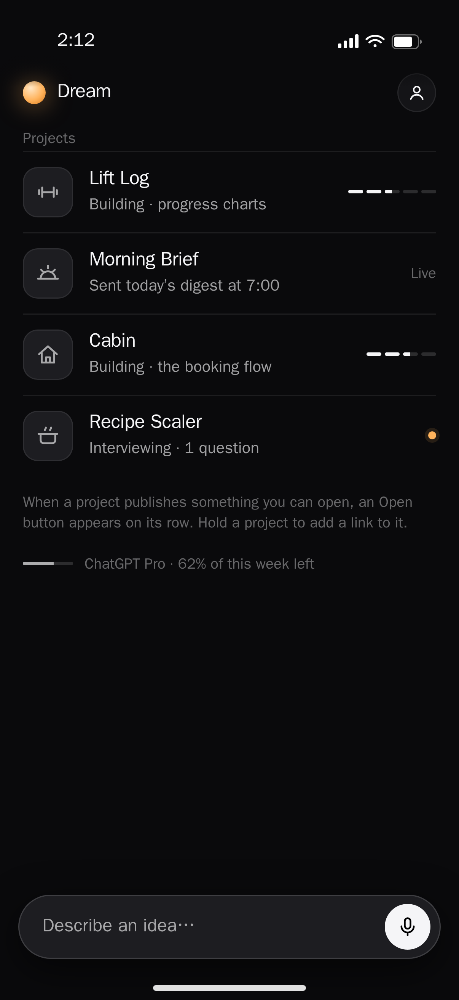
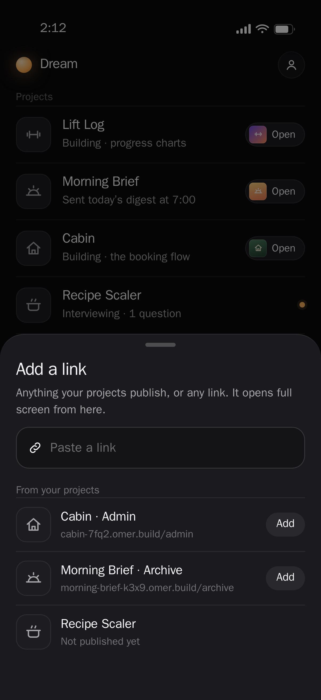
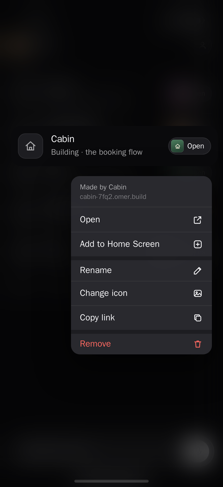
An “Apps” card above Projects, one row per link with an Open button, like an App Store list. It’s the clearest about what each link is and who made it, and it has room for the agent’s live line. The trade-off: it’s the heaviest option, each link costs a full row, and Home then has two lists that look alike.
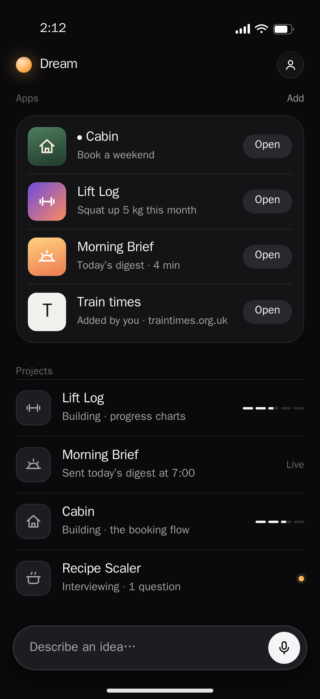
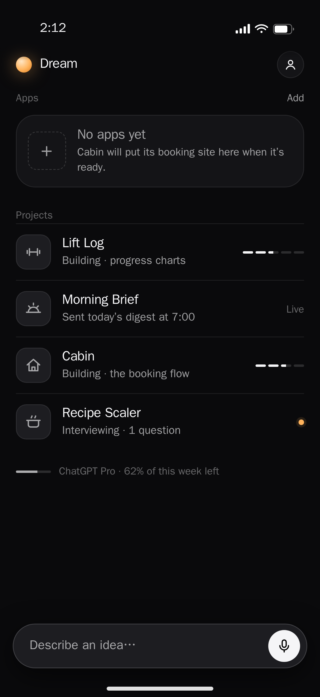
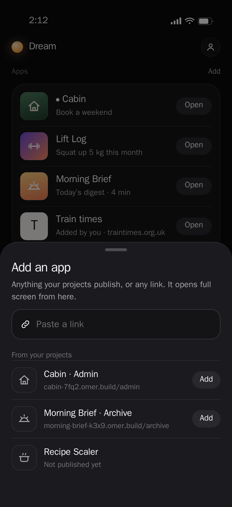
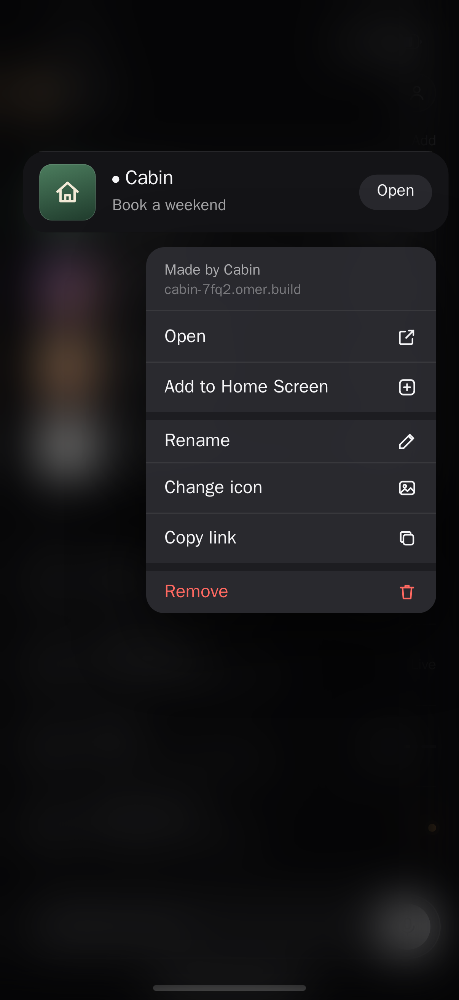
Safari’s own Add to Home Screen, made easy. On iOS 26 every site added from Safari opens as a web app: its own icon, full screen. Dream’s gateway serves a manifest and apple-touch-icon for each published app from the link’s name and icon, so Safari gets them right. It takes 5 taps from Dream’s menu: Add to Home Screen → Open in Safari → ••• → Share → Add to Home Screen → Add (one more if Add to Home Screen needs a scroll).
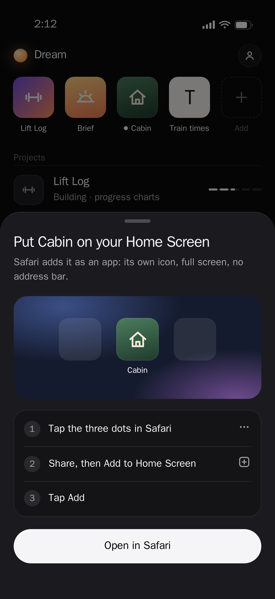
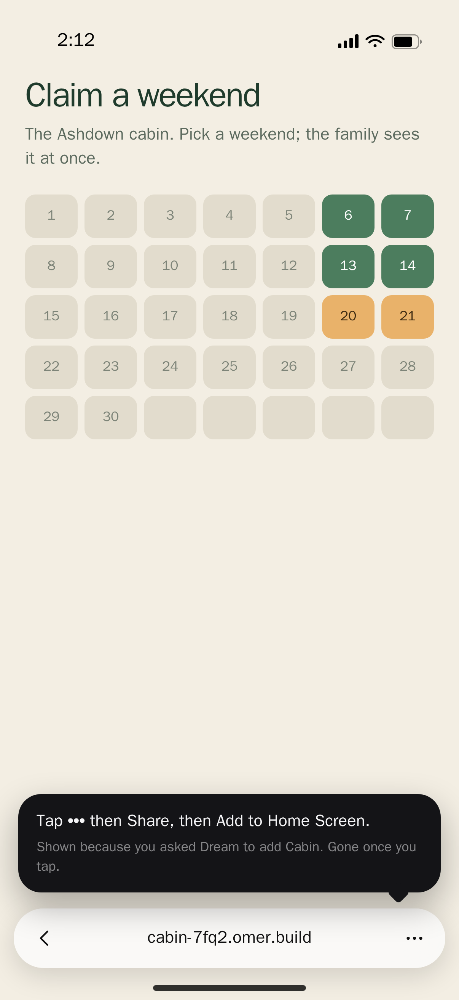
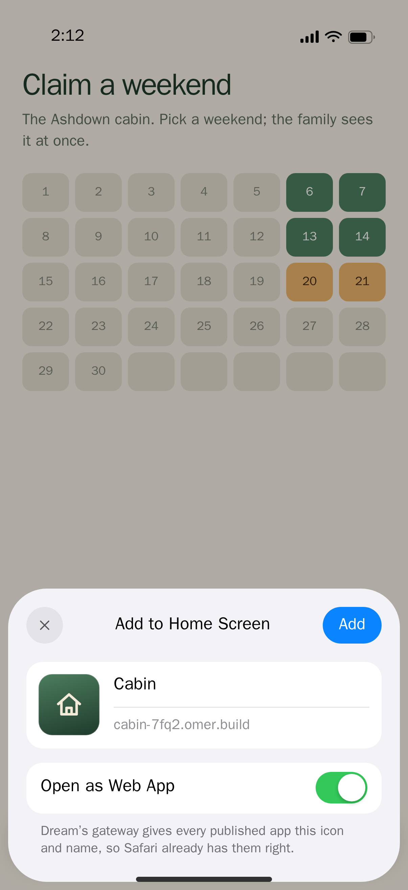
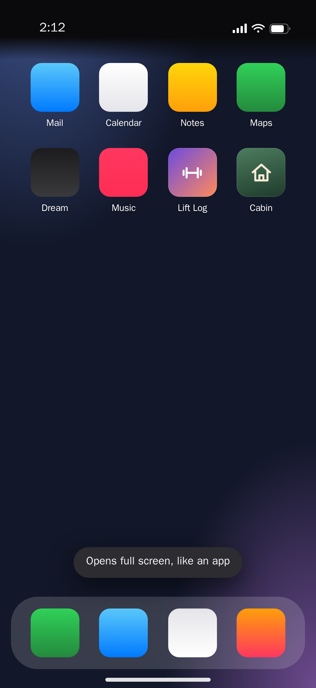
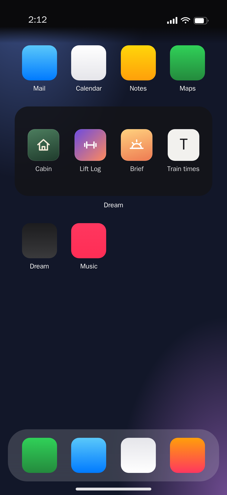
| Path | Taps | Result | Verdict |
|---|---|---|---|
| Safari Add to Home Screen | ~5 (4 inside Safari) | A real icon that opens full screen as a web app (default on iOS 26, no manifest needed). Icon and name come from the site; Dream’s gateway can supply both for published apps. | Use it. Works today, no native build. |
| Share sheet inside Dream | — | Add to Home Screen only appears for apps with the managed com.apple.developer.web-browser entitlement, which is for browsers. | Not available to Dream. |
| Web Clip profile (.mobileconfig) | ~8, plus passcode | A true icon with Dream’s image; FullScreen works. Install: download → Allow → Settings → Profile Downloaded → Install → passcode → Install → Done, with a “Not Verified” warning unless signed. The key that would open links in Dream (TargetApplicationBundleIdentifier) works only through MDM. | No: a device-management detour for an icon. |
| App Intents + Shortcuts | ~8 | The person builds or finds a shortcut, then adds it to the Home Screen from the Shortcuts app. Shortcuts’ glyph unless they pick a photo; it runs through Shortcuts. | No: most taps and the weakest icon. |
| WidgetKit widget | ~5 | Home Screen edit → Add Widget → Dream → size → Add. Shows several links and updates when an agent adds one. Smallest size is 2×2; taps open Dream, which then opens the link. | Later, with the next native build. |